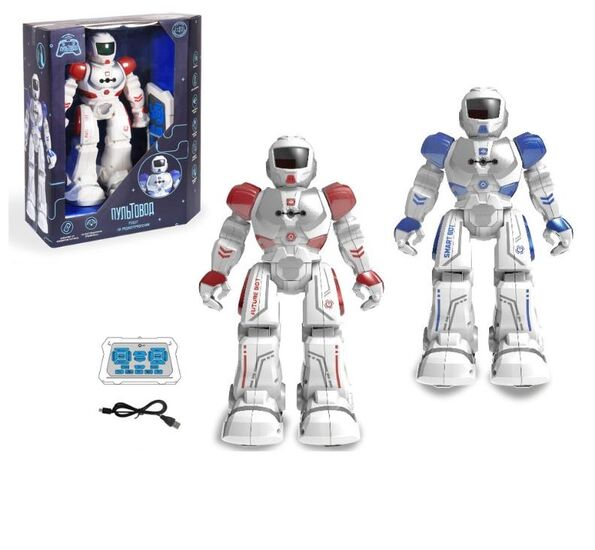

Интерактивный робот ПУЛЬТОВОД 26 см, звук, песни, сенсорный датчик, русское озвучивание, акк+з/у
 Если вы любите пробовать все новое, а качественный товар для вас не пустой звук, тогда стоит присмотреться к интерактивному радиоуправляемому роботу. Это та игрушка, что подойдет детям и взрослым, поможет прекрасно провести время с семьей или друзьями, а также развлечь себя в свободное время. Этот робот может порадовать современным дизайном и внешним видом, функционалом, разработанным специалистами высокого класса с большим опытом работы.
Игрушка стала популярной у потребителей, ведь ее устройство предусматривает наличие таких возможностей, как:
использование ее без дополнительного перевода – наличие русификации;
выполнение роботом команд хозяина (в рамках функционала);
ее передвижение во все 4 стороны – вперед, назад, вправо и влево;
прослушивание треков, песен, звучащих на русском языке;
удобное хранение за счет компактных габаритов 8*16*26,5 см;